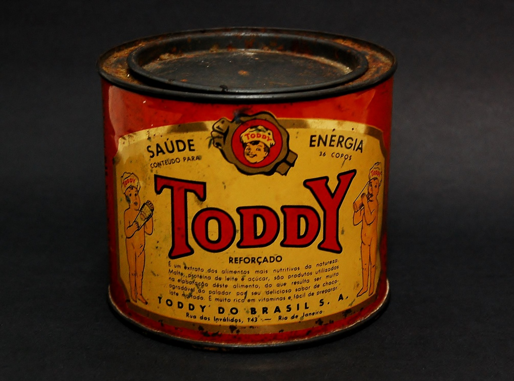

O contexto por trás de uma das mais tradicionais e famosas marcas de achocolatados no Brasil, teve um início dramático. Tudo começa em 1916, após a familia do imigrante e espanhol Pedro Erasmo Santiago, perder toda sua plantação de cacau para um furacão que assolou toda a ilha. Sem mais boa parte de sua riqueza, Pedro migrou para os Estados Unidos, numa nova tentativa de gerar renda. Desta forma, em um longo período de 15 anos, Santiago conseguiu prosperar economicamente, saindo de um lavador de banheiros para um grande empresário do ramo alimentício. Com boas condições financeiras, ele decidiu investir e comprar os direitos de uso da marca TODDY na América do Sul, lançando então, em meados de 1930, um achocolatdo na Argentina onde tinha uma instalação de uma fábrica própría para o produto.
O protótipo incial do achocolatado, abrangia carcteristicas de duas bebidas quentes tomadas no inverno, o Scotch Toddy (feito a base de mel, creme de leite, gema de ovo e uísque), e o Rum Toddy (feito de melaço de cana, cacau e rum), mas obviamente sem álcool. Em torno de 1933, Pedro Santiago recebeu permissão do Governo Provisório de Getúlio Vargas para comercializar o produto no país, ganhando o título de um dos primeiros achocolatados em pó do mercado brasileiro. Anúncios do pó até então enlatado, apareciam por todos os lados, se aproveitando da saúde através de frases que caracterizavam o produto como suplemento alimentar. Já com uma grande popularidade, o produto passou pro expansões, mudanças na composição e na estética, mas sempre preservando o gosto característico do achocolatado. Começou a ser comercializado na Espanha, Estados Unidos, Portugal e muitos outros países, ganhando seu espaço nos cafés da manhã das pessoas e marcando uma geração de crianças brasileiras.

O produto atual e sua composição
Com o avanço da modernidade e também após a marca ser vendida para a Quacker Oats (uma das afilidadas da gigante PepsiCo), o Toddy passou por grandes mudanças positivas no seu desenvolvimento. A começar pela mudança na embalagem, que deixou de ser em lata e passou a ser em embalagens de plástico resistente, aumentando a higiene e integridade do alimento. As mudanças não pararam aí, pois com o crescimento da marca e do produto, eles passaram a lançar variações do achocolatado junto de novos alimentos como cookies, refis, achocolatados já prontos e muito mais.
Atualmente o produto em sua variação original e na versão padrão (400g), possui os seguintes ingredientes: açucar, cacau, extrato de malte, sal, soro de leite em pó, leite desnatado em pó, vitaminas (B1, B2, B3, B6, A, C e D), estabilizante lectinia de soja e aromatizantes. A seguir você verá uma tabela com algumas proporções mais específicas: